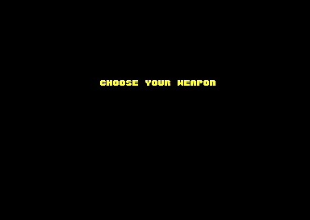

<meta charset="utf-8">
<meta name="viewport" content="width=device-width, initial-scale=1">
<title>The Living Daylights: controls</title>
<link rel="preconnect" href="https://fonts.googleapis.com">
<link rel="stylesheet" href="https://fonts.googleapis.com/css2?family=Lato:wght@400;700;900&family=IBM+Plex+Mono:wght@400;500&display=swap">
<style>
:root{
  --bg:#23262d; --paper:#e9e7e1; --surface:#ffffff; --surface-2:#f1efea; --line:#d5d3cc; --line-soft:#e0ded8;
  --ink:#2f3136; --ink-soft:#55585f; --ink-mute:#80838a;
  --link:#1f5fa8; --link-hover:#154480; --accent:#1f5fa8;
  --amber:#c25a00; --cyan:#1f5fa8; --coral:#d04a3a; --green:#2a8a4a; --violet:#4a5bd6; --hl:#fff0c2;
  --chip:#2f3136; --chip-ink:#ffffff;
  --c64blue:#40318d; --c64grey:#686868;
  --fd:'Lato',system-ui,sans-serif; --fb:'Lato',system-ui,sans-serif; --fm:'IBM Plex Mono',ui-monospace,Menlo,monospace;
  --col:1080px; --gx:68px; --fs:17px; --lh:1.6; --hw:900; --h1:46px; --h2:26px; --sy:48px; --pp:26px; --r:10px;
  --plate-shadow:0 1px 2px rgba(0,0,0,.05),0 4px 14px rgba(0,0,0,.05);
}
*{box-sizing:border-box}
html{background:var(--bg);min-height:100%}
body{background:var(--paper);color:var(--ink);font-family:var(--fb);font-size:var(--fs);line-height:var(--lh);max-width:var(--col);margin:0 auto;min-height:100vh;padding:0 0 4rem}
h1,h2,h3{font-weight:var(--hw);letter-spacing:-.01em;text-wrap:balance;color:var(--ink);margin:0}
.wrap{padding:0 var(--gx)}
.hero{padding:48px var(--gx) 8px;text-align:left}
.eyebrow{font-family:var(--fm);font-size:12px;letter-spacing:.08em;text-transform:uppercase;color:var(--ink-mute);margin:0 0 10px}
.hero h1{font-size:var(--h1);line-height:1.15;letter-spacing:-.02em;margin:0 0 14px}
.hero .sub{margin:0 0 .6em;color:var(--ink-soft)}
section{padding:var(--sy) 0 24px}
section:last-of-type{border-bottom:none}
.fig{font-family:var(--fm);font-size:12px;letter-spacing:.08em;text-transform:uppercase;color:var(--ink-mute);margin:0 0 10px}
h2.t{font-size:var(--h2);margin-bottom:12px}
.lede{color:var(--ink-soft);margin:0 0 30px}
.plate{background:var(--surface);border:1px solid var(--line);border-radius:var(--r);padding:var(--pp);box-shadow:var(--plate-shadow)}
.cap{font-size:14px;color:var(--ink-mute);margin-top:14px;line-height:1.55}
.cap b{color:var(--ink);font-weight:700}
code{font-family:var(--fm);font-size:.82em;background:var(--chip);color:var(--chip-ink);border-radius:4px;padding:2px 6px;overflow-wrap:break-word;-webkit-box-decoration-break:clone;box-decoration-break:clone}

.ft-grid{display:grid;gap:6px}
.ft-grid button{padding:0;position:relative;line-height:0}
.ft-grid canvas{width:100%;image-rendering:pixelated;display:block}
.ft-tag{position:absolute;left:3px;top:3px;font:500 11px/1.3 var(--fm);background:rgba(255,255,255,.88);color:var(--ink);border-radius:3px;padding:1px 4px}
.ft-mark{position:absolute;right:3px;bottom:3px;font:500 10px/1.3 var(--fm);background:var(--chip);color:var(--chip-ink);border-radius:3px;padding:1px 4px}
.ft-big canvas{width:100%;max-width:768px;image-rendering:pixelated;display:block;margin:0 auto}
.ft-table{border-collapse:collapse;font-size:14px;width:100%}
.ft-table td,.ft-table th{border-bottom:1px solid var(--line-soft);padding:5px 8px;text-align:left;vertical-align:top}
.ft-two{display:grid;grid-template-columns:1fr 1fr;gap:16px;align-items:start}
.ft-four{display:grid;grid-template-columns:repeat(3,1fr);gap:12px;margin:0 0 20px}
.ft-four .plate,.ft-two .plate{margin:0;padding:12px}
.ft-shot,.ft-px{width:100%;height:auto;image-rendering:pixelated;display:block}
.ft-wide{max-width:960px;margin:0 auto}
.plate{margin:0 0 22px}
.ft-scroll{overflow-x:auto}
.ft-lab{display:block;font-family:var(--fm);font-size:13px;color:var(--ink-soft);margin:6px 0}
.ft-range{width:100%;max-width:520px;display:block}
.ft-controls{display:grid;grid-template-columns:repeat(3,1fr);gap:14px;margin:12px 0 0}
.ft-read{font-family:var(--fm);font-size:14px;background:var(--surface-2);border-radius:6px;padding:10px 12px;margin:12px 0 0}
.ft-bar-out{height:12px;background:var(--surface-2);border:1px solid var(--line);border-radius:6px;overflow:hidden;margin:10px 0 0;max-width:520px}
.ft-bar-out div{height:100%;background:repeating-linear-gradient(45deg,var(--amber) 0 6px,#e08a3c 6px 12px)}
.ft-meter{position:relative;width:110px;height:18px;background:var(--surface-2);border:1px solid var(--line);border-radius:4px;overflow:hidden}
.ft-meter span{position:absolute;left:0;top:0;bottom:0;background:var(--cyan);opacity:.35}
.ft-meter b{position:relative;font:500 12px/18px var(--fm);padding-left:6px}
.ft-objs{white-space:nowrap}
.ft-obj{display:inline-flex;flex-direction:column;align-items:center;margin:0 3px 0 0;padding:2px;background:#222;border-radius:4px;vertical-align:top}
.ft-obj i{font:500 10px/1.2 var(--fm);color:#fff;font-style:normal}
.ft-swapped{outline:2px dashed var(--amber);outline-offset:-2px}
.ft-swapped i{text-decoration:line-through;text-decoration-color:var(--amber)}
.ft-table canvas{background:#222;border-radius:4px;image-rendering:pixelated}
.ft-dead{display:flex;flex-wrap:wrap;gap:6px;margin:12px 0 0}
.ft-dead button{font-size:12px;padding:4px 8px}
@media (max-width:760px){:root{--gx:16px;--h1:36px;--pp:14px}.ft-two,.ft-four,.ft-controls{grid-template-columns:1fr}}
sup.fn{font-size:.7em;line-height:0}
sup.fn a{text-decoration:none}
sup.fn + sup.fn::before{content:","}
.overview-shot{margin:22px 0}
.overview-shot img{width:100%;max-width:768px;height:auto;aspect-ratio:384/272;image-rendering:pixelated;display:block}
.overview-shot figcaption{font-size:14px;color:var(--ink-mute);margin-top:8px;max-width:768px}
</style>
<!-- tabs -->
<header class="hero">
  <p class="eyebrow">Commodore 64 · 1987 · Domark</p>
  <h1>The Living Daylights: controls</h1>
  <p class="sub">A joystick in port 2 and one key. The same stick aims, runs, jumps, rolls, ducks, and changes weapons, depending on whether Bond is standing or running and how long fire is held.</p>
</header>
<main class="wrap">

<section id="stick">
  <p class="fig">01 · The stick</p>
  <h2 class="t">Standing or running</h2>
  <p class="lede">The game reads the joystick in port 2 once a frame (<a href="source.html#13B3"><code>$13B3</code></a>). What each direction does depends on whether Bond is standing still or running (<a href="source.html#006D"><code>$6D</code></a>).</p>
  <div class="ft-scroll"><table class="ft-table" style="max-width:760px">
    <thead><tr><th>Input</th><th>Bond standing</th><th>Bond running</th></tr></thead>
    <tbody>
      <tr><td>Left, right, up, down</td><td>Move the crosshair</td><td>Left stops him</td></tr>
      <tr><td>Right, with the crosshair at the right edge</td><td>Starts him running</td><td>Keeps him running</td></tr>
      <tr><td>Stick let go</td><td>The crosshair stops and slows down again</td><td>Stops him</td></tr>
      <tr><td>Up</td><td>Moves the crosshair up; with fire held for 15 frames, jumps</td><td>Jumps</td></tr>
      <tr><td>Down</td><td>Moves the crosshair down; with fire held for 15 frames, ducks</td><td>With right held, rolls</td></tr>
      <tr><td>Fire, released over the scenery</td><td>Shoots at the crosshair</td><td>Shoots at the crosshair</td></tr>
      <tr><td>Fire, released with the crosshair on the status line</td><td>Changes weapon</td><td>Changes weapon</td></tr>
    </tbody>
  </table></div>
  <p class="cap">From <a href="source.html#1442"><code>$1442</code></a> (up and down), <a href="source.html#14A8"><code>$14A8</code></a> and <a href="source.html#14BA"><code>$14BA</code></a> (right and left), and <a href="source.html#1413"><code>$1413</code></a> (the stick let go).</p>
</section>

<section id="crosshair">
  <p class="fig">02 · The crosshair</p>
  <h2 class="t">A crosshair that speeds up</h2>
  <p>The crosshair is sprite 0, and each level starts with it in the middle of the screen (<a href="source.html#15B0"><code>$15B0</code></a>). It starts slowly, and every third frame the stick is held it moves faster, up to three steps faster (<a href="source.html#1573"><code>$1573</code></a>). Letting the stick go drops it back to the slowest speed. It can go as far up as the top of the scenery and as far down as the status line, and as far right as the edge where Bond starts to run (<a href="source.html#151F"><code>$151F</code></a>).</p>
</section>

<section id="jump">
  <p class="fig">03 · Jumping, rolling, and ducking</p>
  <h2 class="t">Three ways past an obstacle</h2>
  <p>A jump is six frames of Bond's sprites: two up, two level, two down (<a href="source.html#3392"><code>$3392</code></a>). It carries him over an <a href="gameplay.html#obstacles">obstacle</a> and over the pipe worker's throws. A roll is nine frames along the ground while he keeps running (<a href="source.html#33CE"><code>$33CE</code></a>), and it is the only way past the thing that comes along The Pipeline. A duck lays Bond on the ground for 60 frames, under the shots from the doorways (<a href="source.html#3367"><code>$3367</code></a>). The animation steps every seventh frame, and sooner while he runs (<a href="source.html#3345"><code>$3345</code></a>). Standing, the stick has to wait for fire to be held 15 frames before up or down means a jump or a duck rather than moving the crosshair.</p>
</section>

<section id="weapon-menu">
  <p class="fig">04 · Changing weapon</p>
  <h2 class="t">The status line is a button</h2>
  <figure class="overview-shot"><figcaption>The screen that flashes up when the weapon changes.</figcaption></figure>
  <p>Bond carries two weapons: the Walther PPK and the one chosen at <a href="gameplay.html#q-branch">Q branch</a>. To switch, the player moves the crosshair down onto the status line, below the scenery, and releases fire there (<a href="source.html#2C47"><code>$2C47</code></a>). The new weapon's name appears on the status line. In Whittaker's House, and after a single-use weapon has been spent, switching is turned off.</p>
</section>

<section id="keys">
  <p class="fig">05 · Keys</p>
  <h2 class="t">F7 and nothing else</h2>
  <p>F7 starts a game from the title screen, which flashes "F7 TO START" on both sides while it waits (<a href="source.html#11C5"><code>$11C5</code></a>). No key pauses the game. RESTORE, which on many C64 games stops or resets the program, does nothing: the game points the interrupt it causes at a bare return (<a href="source.html#3F2E"><code>$3F2E</code></a>).</p>
</section>

</main>

</main>

<footer style="margin:16px 0 0;padding:22px var(--gx) 0;border-top:1px solid #e0ded8;font-family:'IBM Plex Mono',ui-monospace,Menlo,monospace;font-size:12px;color:#80838a"><a href="https://github.com/gamesexplained/gamesexplained" style="color:#1f5fa8;text-decoration:none">GitHub</a> · <a href="https://discord.gg/3V9GWyRDWV" style="color:#1f5fa8;text-decoration:none">Discord</a><br>© Games Explained contributors. Write-ups, facts and symbol maps are available under <a href="https://creativecommons.org/licenses/by-sa/4.0/" style="color:#1f5fa8;text-decoration:none">CC BY-SA 4.0</a>; code under <a href="https://opensource.org/licenses/MIT" style="color:#1f5fa8;text-decoration:none">MIT</a></footer>
